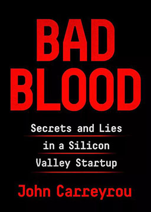

双语小说
收录中英文双语小说300多部，包括世界经典名著、社会小说、悬疑小说等短篇和长篇小说，可按照初中难度、高中难度和大学难度分类阅读，每部小说都有分段中英文对照，点击单词可查看中文翻译。

五十度飞 (Fifty Shades Freed)
作者：E·L·詹姆斯 (E.L. James) [英国]
这对情侣终成眷属，步入了婚姻的殿堂。安娜身着一袭蕾丝长裙，头戴新娘面纱，配以简约珠宝却尽显美丽。这对新人对彼此说出誓言，并举行了一场奢华且洋溢着幸福的婚礼。一架私人飞机已经准备好搭载他们二人飞往巴黎，来一场说走就走的极奢浪漫之旅。格雷身边时刻有保镖跟随，安娜却不太明白这么做有什么必要。格雷也没告诉她杰克一直在给他们制造麻烦。但在一个电话打来，通知有人在格雷的办公室纵火时， 安娜立刻反应过来这可能是杰克所为。在看了监控录像后，他们更加确定了视频中的嫌疑人就是杰克，随即立刻返回了家中。当他们回到西雅图，安娜想要回到她编辑的岗位继续工作，然而格雷却对这个想法持保留态度。他表示自己并不想让安娜继续工作，因为他很担心她的人身安全。杰克确实一直在寻找机会复仇，但格雷好像在以此为借口阻止除自己外的任何人接触安娜。
五十度黑 (Fifty Shades Darker)
作者：E·L·詹姆斯 (E.L. James) [英国]
格雷和安娜分手了。安娜在出版业有了一份新工作，看上去很开心，但无法拒绝格雷强烈的追求，在他保证有所改变之后，两人迅速和好了。出于不知名的原因偷到了她的银行账户信息，而且禁止她出差。安娜的老板杰克没安好心，对她欲行不轨。格雷的嫉妒倾向压倒了一切，他买下了她工作的公司，杰克丢了工作。格雷生日在家里举办了晚会并向女主求婚成功，俩人高兴的抱在一起，而之前被撤职的男上司杰克站在格雷家墙外，用烟头把格雷在全家福照片上的的头给烧没了，最后杰克被格雷弄得身败名裂，然后杰克抓走了格雷的小姑子，安娜独自营救。格雷不放心，也去救人了，然后小姑子被救出来了，杰克得到了应有的惩罚。
五十度灰 (Fifty Shades of Grey)
作者：E·L·詹姆斯 (E.L. James) [英国]
一名纯真的21岁女大学生安娜作为大学校报的记者，某天接到去采访格雷的任务。格雷年少有为，年仅28岁就已经是一名财团的董事长。然而，在他精致而强大的外表下，隐藏着一个不为人知的秘密，他喜欢SM（性虐待）。当格雷遇见安娜后，这个小女孩身上的青涩引起了格雷的兴趣，于是格雷对安娜展开了疯狂的追求。而安娜也倾心于这个气场强大的霸道总裁，但是得知他喜欢SM后，安娜十分痛苦，不知道该继续和他交往还是该赶紧离开。另一方面，格雷的禁忌之爱给了安娜别样的体验，这段恋爱中充满了激情、刺激，这让安娜越来越沉迷，以至于不能自拔，结果不断发现自己不为人知的阴暗面。英语美文: 早安 (Good Morning)
作者：未知 (unknow) [未知]
没有一件工作不辛苦，没有一处人事不复杂，学着勤奋踏实而淡然，越简单越会越快乐。熊熊燃烧的爱情之火，缠绵缱绻的甜言蜜语，引人入胜的精彩传奇。体味成长的酸甜苦辣，回忆成长的点点滴滴，记录成长的精彩瞬间，四季流转变化，悲欢离合，酸甜苦辣，成就真实的人生。冲淡平和的心境，进退自如的谋略，人生智慧尽在其中。聆听大自然的声音，悉心体味人与自然的心灵独白。在暖暖的阳光下，临窗而坐，读一篇优美的散文，馨香绕怀，开启一天的生活。
英语美文: 聆听 (Listen)
作者：未知 (unknow) [未知]
无心快语可能引发争执，无情之词可能折损生命，适时温语可能消弭压力，而关爱之声可能治愈心灵。当你的心在痛，眼里噙满泪水时，那就抬头看看，天空依旧是那么广阔，云朵依旧是那么潇洒。而后悬于时光深处，静静聆听，直到听见那心灵深处的音乐。用心聆听这世界的美好，倾听我们身边的每一个人，感受每一种声音，感悟生命的启示。给自己一点点时间，静静的思考。相信每一天都是上帝的恩赐，人生本是一场体验，跟随内心活出个性，做自己喜欢的那个人。本书可以提高文学素养，陶冶情操。如果你是一位英语爱好者，阅读本书可以一睹这些杰作的原文风采。英语美文: 成长 (Grow Up)
作者：未知 (unknow) [未知]
世界上最美丽的地方，便是我们的家，没有杂质，没有隔阂，更没有虚伪。家是我们所爱的地方，双脚可以离开，心却不能。一个人的家就是他的城堡。不要吝啬一个祝福，不要害羞一个拥抱。拥抱我们的家人，说一声我爱你。珍视这平凡而又高贵的亲情，那是此生此世最真最切的永恒。小时候我们总是盼着长大，以为长大了就可以不用学习了，就可以随心所欲了，就可以赚钱买任何自己想要的。可是长大才知道，生活有多艰辛。
成为 (Becoming)
作者：米歇尔·奥巴马 (Michelle Obama) [美国]
一个来自芝加哥南部的小女孩，是如何发现自己，并积蓄足够的力量去影响更多人的。希望自己的人生经历能够鼓舞读者，让他们有勇气去成为他们想成为的人。本书记录了米歇尔生活中的所有重要细节，包括在芝加哥南部度过的童年、成年后的职业生涯和作为母亲的经历，以及她在白宫的经历、在公共卫生领域展开的运动，奥巴马执政中的重要时刻。书中首次公开描述了她的婚姻生活，尤其是她与贝拉克·奥巴马结婚的早些年，分享她如何在丈夫政治生涯的快速上升期寻求职场与家庭间的平衡。她向我们展露了他们二人关于要不要参加美国总统竞选的私下争论，以及她在贝拉克竞选期间所扮演的既备受欢迎又饱受指责的角色。米歇尔以优雅、诙谐、坦率的口吻，引人入胜的叙事手法，向我们讲述他们如何历史性地进入白宫，成为美国有史以来第一个非洲裔第一家庭，以及在白宫生活的八年，她终于了解她的国家，她的国家也终于了解她的八年。
坏血: 一个硅谷巨头的秘密与谎言 (Bad Blood: Secrets and Lies in a Silicon Valley Startup)
作者：约翰·卡雷鲁 (John Carreyrou) [美国]
2014年，伊丽莎白·霍姆斯所创立的企业希拉洛斯由于其革命性的血液检测技术，在一滴血上进行两百多项专业检测。在短短十年间成长为硅谷最具商业价值的独角兽公司。霍姆斯本人更是跻身全美四百大富豪榜，入选《时代》杂志影响全球的百大人物，一跃成为硅谷第一位亿万女性创业家。希拉洛斯的身后隐藏着豪华阵容的董事会成员，美国前国务卿乔治·舒尔茨、亨利·基辛格，媒体大亨鲁伯特·默多克，甲骨文创始人拉里·埃里森，传奇创投家唐纳德·卢卡斯等。就在人们期待着希拉洛斯成长为下一个苹果或者谷歌时，一个真相逐渐显现，希拉洛斯所声称的革命技术是假的，这个商业神话内核的只有一个，那就是谎言。 一场价值近百亿美元的骗局如何被精心打造？一个毫无医学背景的斯坦福辍学生缘何能蒙骗住一众美国政商界大佬？两届普利策新闻奖得主约翰·卡雷鲁不畏威胁、追踪，以冷静的笔触和完整的细节，揭露了这个自安然公司之后规模最大的企业诈骗案内幕。
螺丝在拧紧 (The Turn of the Screw)
作者：亨利·詹姆斯 (Henry James) [美国]
美国作家亨利·詹姆斯创作的中篇小说，首次发表于1898年。该书在118年间，被翻译成15种语言，畅销30多个国家。内容简介：一个年轻纯朴的姑娘应聘到一个大户人家担任家庭教师。开始时，一切都令她满意。她的学生，两个小姐弟天真烂漫，活泼可爱；乡下环境优美，空气清新。后来这种平静的生活突然被打破了，这种变化犹如一头猛兽一跃而起。不久之后就发生了一系列难解的事情：古堡寂静的走廊里传来神秘的脚步声；暮色中的塔楼顶上突然出现一个陌生男子；午夜时烛光摇曳，窗外鬼影幢幢；两个学生的行为变得越来越怪异，犹如幽灵附体。悬疑和紧张步步堆迭，如同螺丝拧得越来越紧。几周之后，在一个孤寂的傍晚，家庭女教师的幻象中出现了一个披肩长发的男人，头发酒红色，风度翩翩。格罗斯太太猜测女家教看到的鬼魂正是主人的前贴身男仆——彼德·昆特。他生前放荡不羁，形象极其丑陋，后来他的罪恶终于到了尽头，晚上喝醉酒从结冰的山坡上摔了下去，受了致命伤。紧接着，女教师的幻觉中又出现了一个身穿黑色丧服，神态沮丧，面色苍白的女鬼魂，格罗斯太太推断女鬼就是之前那位专门做家教的年轻女士，杰赛尔小姐。前女家庭教师深受彼德·昆特的引诱，与他坠入爱河，最终在离开庄园之后不久就去世了。家庭女教师觉得彼德·昆特和杰赛尔两个鬼魂出现在庄园的目的是侵蚀迈尔斯与弗洛拉的纯真心灵，占有他们的灵魂。所以女家教奋力与两个鬼魂做斗争，然而一次都没有成功。故事结尾，两个小姐弟一个发了疯，一个死在了女家教的怀中。
福尔摩斯和公爵的儿子 (Sherlock Holmes and the Duke's Son)
作者：阿瑟·柯南·道尔 (Arthur Conan Doyle) [英国]
是不是所有的自行车轮胎都一样？有多少种不同的自行车轮胎？当有人骑过松软潮湿的地面，轮胎会在地面上留下车辙，但是有一只轮胎会留下更深的车辙。这是前轮的轮胎还是后轮的轮胎？当公爵的儿子被从赫克斯特伯博士的学校绑架的时候，了解这些问题的答案意义重大。歇洛克·福尔摩斯和他的老朋友华生大夫花了数小时查看低峡谷沼泽里的泥土。他们发现了自行车轮胎的车辙、羊和牛的蹄印。他们还发现了一具尸体。现在有了更多的问题，而且华生大夫认为不可能找到答案。“得啦，得啦，华生，”福尔摩斯说，“每个秘密都有它的答案。”但是甚至连歇洛克·福尔摩斯对这起神秘事件的答案也大感意外。